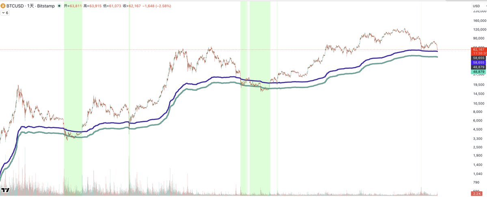
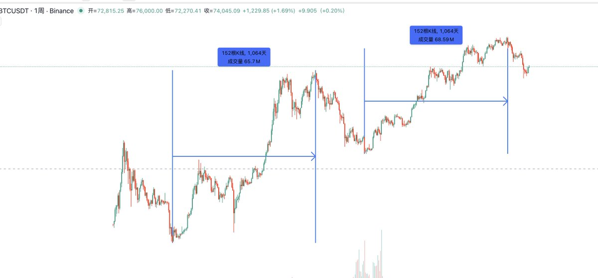
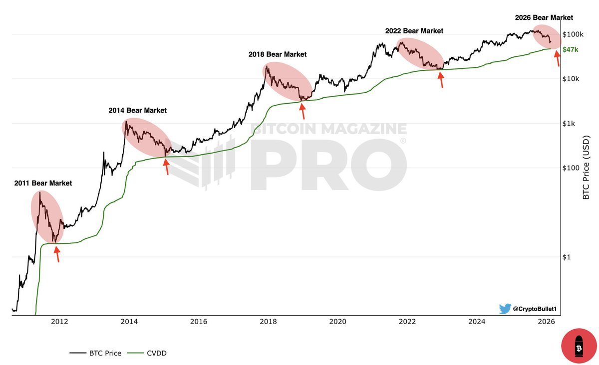

极简图表哲学与多周期四阶嵌套滤波律：周线定势-日线定区-4H锁浪-1H扣动扳机
- **图表极简第一性原理**：图表必须保持绝对干净，严禁充斥五花八门的线条与杂乱指标，先裸K通读全盘才不容易被一叶障目；
- **四级时间周期自上而下**：周线看宏观大格局 -> 日线确认箱体与趋势结构 -> 4H锁定局部推力波与阻力位 -> 1H寻找极低试错成本的入场扳机；
- **大周期对小周期的绝对统治**：小周期的一切杂音都必须屈从于大周期的力量，顺应高周期结构进场才能扛得住盘中震荡。
底层机制推演与交易实操解析
【看盘秩序与心智校准】：很多散户盯盘第一眼就切到 15 分钟甚至 5 分钟线，看到一根大阳线就急躁追涨，往往恰好买在 4H 或日线级别的强阻力位上。街哥坚持 8 年的标准动作是：先关掉所有指标，纯裸 K 按照周线-日线-4H-1H 逐级扫过，标注出各个级别的关键高低点（Swing High/Low），摸清当前价格处于行情的什么骨架位置。
【均线辅助的大趋势过滤】：裸 K 读完后，再调出顾比均线（GMMA）对大趋势做二次核验。顾比均线的短期组与长期组发散状态，能清晰展示机构大资金的建仓成本分布与主趋势推力。均线只用作大势辅助，绝不用作机械式交叉金叉死叉交易。
【入场点与盈亏比苛求】：真正具备高盈亏比的操作，永远发生在小周期向大周期结构位靠拢的极窄空间内。在 1H 级别依托日线支撑位开单，止损只需放在结构外侧几个点，而目标空间则是 4H 或日线的下一阻力带，盈亏比轻松达到 1:3 甚至 1:5 以上。
街哥核心领读推文 · 站内免跳阅览
对比特币有信仰的人，这是抄底比特币最终篇，没信仰就不要看了。
比特币作为一个万亿市值的资产，你可以看看能上万亿市值的公司并不多，目前比特币市值是1.2万亿左右，背靠1万亿上下随便买，不要太在意价格多少，也不要在意价格短期跌破了某些位置，你可以看看底部的时候短暂跌破两个线都很正常。
比特币未来大资金都会作为资产来进行配置的，今年是最好买入比特币的时机，每四年一次的世界杯我经历3次了每次都是比特币的底部，12万唱多永恒牛市的都不说话了，我得为比特币抗大旗。
持有比特币的终极信仰：各国的货币最终都会贬值，一文不值，比特币未来肯定会重回历史新高的，按这两个线买就完事了，比特币不会被量子计算攻破。
作为散户不要再玩合约了，省点钱亏，现货永恒，我经历三次比特币的牛熊周期了，我玩合约挣再多的钱都没我把比特币拿住挣的多。
今年买入以后你要有现金流支撑你才能拿的住，要好好想想你们的现金流是什么。
今年是最好买入btc的时机，今年是最好买入crcl的时机，今年是最好买入coinbase或者hood的时机。
切记不要买eth，不要买任何垃圾山寨，唯有比特币永恒。

记住，在哪抄底或者有没有抄到历史大底，根本不重要。
最重要的是，你在熊市最后的阶段能保留多少子弹来买入btc，这个决定了下次牛市顶点，你资金体量的高度。
你是否有1064天（三年左右）死拿不卖的现金流，保证你这三年能不卖出一点比特币，不会影响你的生活，别说什么，你买完就找个班去上了，每一个参考历史周期买入比特币的人，都他妈告诉自己要死拿。
你的投资决策你的妻子，爱人，父母，甚至孩子是否会理解你？
他们会觉得，拿几十万或者几百万好好生活不行吗？
非要买这些看不到摸不到的东西，你是不是有病啊，几个月可以如此，三年呢？中间涨了还行，要是半年都不涨呢？你还有信仰吗？
当你拿住比特币的时候，会出现无数幺蛾子的山寨币或者乱七八糟的土狗叙事，把你的比特币骗走，因为你会觉得拿住比特币太慢了，山寨一天就50%，你总想切换过去玩玩，最后。。。。
如果你想把做合约当成现金流，我也照样是过来人，我胜率再高，也依然赢不了1064天，输一次就想挣回来，挣不回来就加大本金，没有本金就去卖现货，循环。
所以，重要的是这几个问题
1）底部尾端的时候，你的资金对比牛市顶点还剩多少？用于配置比特币的资金有多少？
2）你拿住比特币不动，然后可以保障生活的现金流是什么？
3）你的信仰是否能支撑你拿住，信仰是历史周期还是人民币美元的购买力下降，唯有比特币永恒？
4）你能否忍住不玩山寨，不碰土狗？
5）你的投资决策是否家人支持，爱人支持？
我没有制造焦虑，这条和上一条都是我作为过来人真实的感受，找到你的信仰，找到你的现金流。

这里的 CVDD 指的是一个比特币链上指标，常见全称是 Cumulative Value Days Destroyed，中文通常叫 累计价值币天销毁，也有人直接叫 CVDD 价格线。
它的核心思路是用链上“老币被花掉”的行为来估计市场的长期价值底线。
1）先理解 CDD 和 VDD
•Coin Days Destroyed，币天销毁 CDD
一枚币如果很久没动，突然被转走，会一次性“销毁”很多币天。
例子：1 BTC 放了 100 天后转走，CDD = 100。
•Value Days Destroyed，价值币天销毁 VDD
把上面的币天销毁乘上当时价格，得到“价值层面的销毁”。
例子：1 BTC 放 100 天后在 50,000 美元转走，VDD = 100 × 50,000。
•CVDD
就是把 VDD 随时间累计起来，得到一个累积曲线。
2）图里的“CVDD 价格”怎么来
很多图表会把 CVDD 进一步换算成一条“价格线”，当作熊市的深度支撑参考。常见做法是把 CVDD 通过某种归一化方式转成价格维度，用来近似长期持有者的成本和价值底部区域。
不同网站和作者的具体换算细节可能略有差异，所以你看到的“CVDD 在 47k”是该作者采用的那套计算口径下的数值。
3）为什么有人说它像熊市底部支撑
直觉上讲，熊市末期往往出现老币大量转移和筹码换手，这会让 CDD 和 VDD 在某些阶段出现明显变化。用 CVDD 换算出的价格线，历史上经常靠近大周期底部区域，所以被一些交易者当作“终极支撑”之一。
